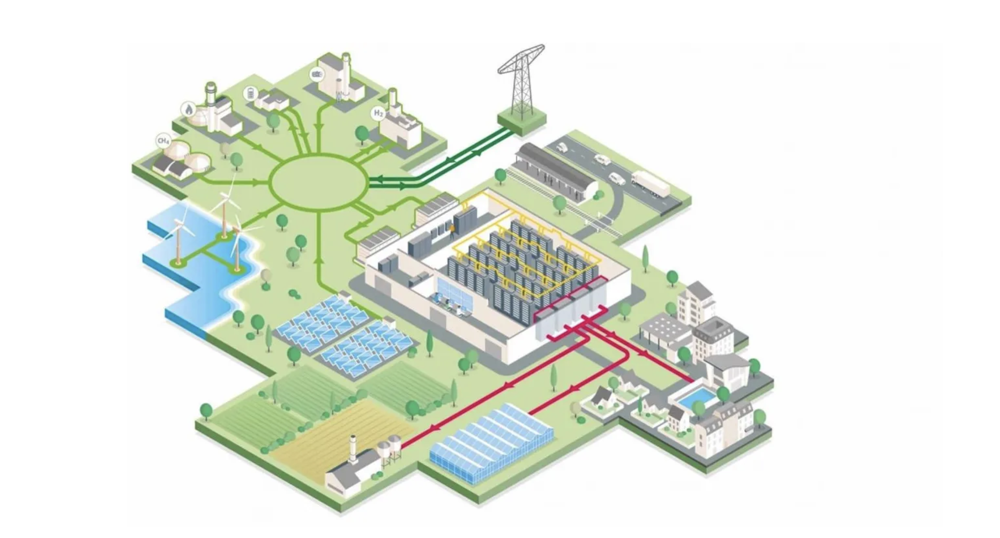

A New Energy Blueprint? 🌍
I wanted to share my insights on Innovation and Design for Energy Majors and Heavy Industry. Light topic, right?
With GenAI reshaping industries, I had a look at how we can "Trojan-horse" human creativity and empathy into the equation. The outcome includes steps towards the collaboration needed when solving the urgent need for reliable power while paving the way for a sustainable future, where I've converted 'double diamonds' into fractals.
The ambition was to spark the idea for new partnerships in the energy sector when looking to create impactful solutions and serve as a bit of "blind date" between the Energy Sector and Design 🌱 This was presented at the TechX conference.
